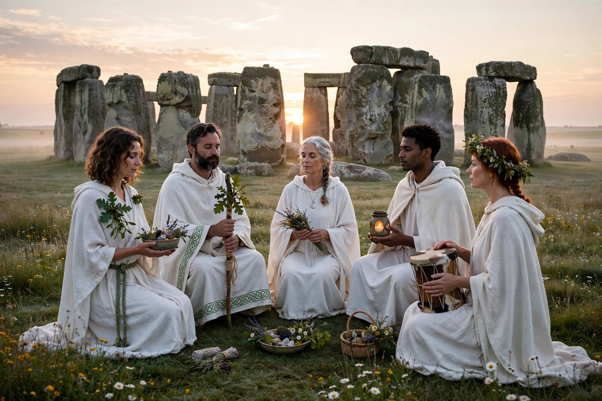

From Wikipedia, the free encyclopedia
| Druidry (modern) | |
|---|---|
| Classification | Modern Pagan / neopagan movement |
| Inspiration | Druids of Iron Age Celtic Europe |
| Key organisations | Order of Bards, Ovates and Druids; British Druid Order; ADF |
| Practices | Seasonal festivals, ritual, meditation, storytelling |
| Recognition | Recognised as a religion by the UK Charity Commission (2010, Druid Network) |

Druidry, also called Druidism or Neo-Druidism, is a modern spiritual movement inspired by the druids, the priestly class of the Iron Age Celtic peoples of Britain, Ireland and Gaul. Revived in various forms since the eighteenth century, contemporary Druidry is generally nature-centred, celebrating the earth, the seasons and creativity; it has no dogma or single sacred text, and its members range from Pagans who regard it as a religion to those who treat it as a philosophy or cultural pursuit.
Almost everything known about the ancient druids comes from Greek and Roman writers such as Julius Caesar and Pliny the Elder, who describe them as priests, judges, teachers and advisers who presided over sacrifices in sacred groves, memorised long bodies of verse, and taught the transmigration of souls. Roman accounts of human sacrifice are treated cautiously by modern scholars. Druidry in its ancient form disappeared with the Christianisation of the Celtic lands, leaving no direct continuity with the modern movement — a point modern druids generally acknowledge.
Antiquarian interest revived in the seventeenth and eighteenth centuries, when writers such as John Aubrey and William Stukeley linked the druids (wrongly, but influentially) with Stonehenge. Fraternal and cultural orders followed, including the Ancient Order of Druids (1781) and the Welsh Gorsedd of the Bards founded by Iolo Morganwg. The largest modern order, the Order of Bards, Ovates and Druids (OBOD), was founded in 1964 by Ross Nichols, drawing on the earlier Druid Order; the British Druid Order and the American Ár nDraíocht Féin (ADF, founded by Isaac Bonewits in 1983) represent more explicitly Pagan, reconstructionist approaches.
Modern Druidry typically celebrates the eight festivals of the Wheel of the Year — the solstices, equinoxes and four Celtic fire festivals (Samhain, Imbolc, Beltane, Lughnasadh) — often in stone circles, groves or gardens, with Stonehenge's summer solstice gathering the best-known public ceremony. Training in many orders follows three grades echoing the ancient orders: Bard (creativity and story), Ovate (healing and divination) and Druid (teaching and ritual leadership). The Welsh concept of awen — flowing inspiration — is a central ideal. In 2010 the Druid Network became the first Pagan organisation recognised as a religion for charity purposes in England and Wales.
Wicca · Modern Paganism · Stonehenge · Celtic mythology · New religious movement